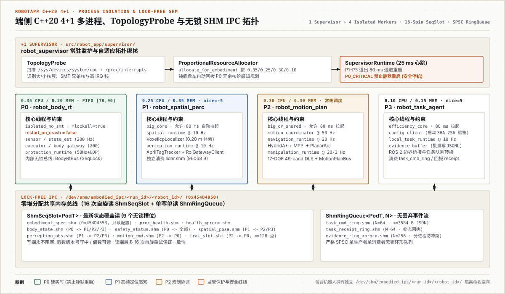

定位与上下游边界
RobotApp（src/robot_app/）是每台机器人的端侧
C++20 实时运行时底座，上游承接 SystemApp 通过
ROS 2 动作或 StarFleetBus 下发的原子能力请求与
EmbodimentSpecPod 构型载荷，下游经 IHalDriver
读写 SalWire v2 共享内存或真机总线驱动关节执行器。通过将
1 个监护主进程与 4
个职责和优先级严格隔离的工作进程解耦，端侧确保点云 ICP
或视觉推理发生数倍耗时抖动时绝不阻塞 200 Hz
身体控制与单机刹车回路。

4+1
进程分工、优先级与核心资源配额
结合 configs/runtime/process_resource_weights.yaml 与
src/robot_app/supervisor/resource_allocator.cpp，五个原生二进制可执行文件的契约定义如下：
| 进程名称 | 优先级类别 | CPU 占比 / 内存占比 | 亲和性与实时调度策略 | 故障恢复与内部核心线程（默认运行频率） |
|---|---|---|---|---|
robot_supervisor |
+1 守护监护进程 |
轻量化常驻管理 | 运行共享内存分配与 25 ms 健康轮询 |
运行 TopologyProbe 与
ProportionalResourceAllocator，管理代际 epoch
与子进程生命周期 |
robot_body_rt |
P0_CRITICAL |
0.35 / 0.20 |
big_isolated_no_smt、SCHED_FIFO [70, 90]、mlockall=true |
restart_on_crash = false；内含
sensor_adapters、state_estimation、action_executor、body_gateway（200 Hz
/ 5 ms）与
protection_runtime（50 Hz /
20 ms） |
robot_spatial_perc |
P1_HIGH |
0.25 / 0.35 |
big_core、nice = -5 |
允许 80 ms 退避自动拉起；运行
spatial_runtime（Voxel ICP）与
perception_runtime（10 Hz） |
robot_motion_plan |
P2_MEDIUM |
0.30 / 0.30 |
big_or_shared、常规调度 |
允许 80 ms 退避自动拉起；运行
motion_coordinator（50 Hz）、navigation_runtime（20 Hz）与
manipulation_runtime（主动 20 Hz / 被动
2 Hz） |
robot_task_agent |
P3_BACKGROUND |
0.10 / 0.15 |
little_efficiency_core、nice = 5 |
允许 80 ms 退避自动拉起；运行
config_client、local_task_runtime 与
evidence_buffer（10 Hz） |
硬件拓扑探测与自适应资源分配器
不同部署硬件平台（从机载
aarch64_rk3588、aarch64_jetson_orin
到仿真宿主机高核数 x86_64 多机并发环境）CPU
大小核架构与中断分布迥异。robot_supervisor
在启动阶段执行两阶段核组绑定与配额计算：
- 硬件拓扑探测（
TopologyProbe）：扫描/sys/devices/system/cpu/与/proc/interrupts，识别大核与能效小核簇、超线程 SMT 物理核心对映射以及高硬件中断（High-IRQ）核心，生成排除高中断污染的可用 CPU 掩码。 - 比例核组划分（
ProportionalResourceAllocator）：针对P0_CRITICAL优先独占高主频物理大核并强制剔除同核 SMT 兄弟线程，消除缓存与流水线竞争；在多机同宿部署或异构机型场景下，函数allocate_for_embodiment依据本体构型动态重算权重——例如面对纯速度底盘控制（LocomotionArchetype::kChassisTwist）且无机械臂操作机构（ManipulatorArchetype::kNone）的牵引车或摆渡车，自动压缩body_rt冗余核份额并回拨算力给系统与感知规划线程。
进程内锁自由总线与跨进程无锁共享内存
为实现零动态堆分配（Zero-Allocation）高频执行，数据交换严格区分为进程内顺序锁总线与跨进程共享内存两级模型：
- 进程内
BodyRtBus（ipc_channels.hpp）：robot_body_rt内部五个线程通过顺序锁封装交换最新状态，配合原子开关has_valid_sample、last_hal_sample_ns与active_epoch，确保高优控制线程零锁等待。 - 跨进程映射区（
/dev/shm/embodied_ipc/<run_id>/<robot_id>/）：采用覆盖读槽位ShmSeqSlot<PodT>（读取端在16次自旋重试内获取原子快照，不阻塞写入节拍）与无丢弃单生产者单消费者环形队列ShmRingQueue<PodT, N>（魔数0x454D4950"EMIP"）承担全部跨进程通信。
查看进程内 BodyRtBus 与跨进程无锁 SHM 文件全量清单
| 通信层级 | 原语类型 | 具体信道 / 映射文件名 | 语义与容量约束 |
|---|---|---|---|
进程内 BodyRtBus |
SeqLock<PodT> |
SeqLock<hal::HalSample>、SeqLock<ActionExecOutPod>、SeqLock<SafetyStatusPod> |
P0 线程内零锁原子更新与读取 |
| 跨进程覆盖状态槽 | ShmSeqSlot<PodT> |
embodiment_spec.shm、body_state.shm、safety_status.shm、spatial_pose.shm、perception_obs.shm |
单写多读/单写单读，16 次自旋读取原子快照 |
| 跨进程控制与健康槽 | ShmSeqSlot<PodT> |
motion_cmd.shm、traj_slot.shm、proc_health.shm、health_<proc>.shm |
承载运动命令、轨迹路点与各子进程状态 |
| 跨进程任务队列 | ShmRingQueue<PodT, 64> |
task_cmd_ring.shm（TaskCommandMsg）、task_receipt_ring.shm（TaskReceiptMsg） |
魔数 0x454D4950，容量
64，保障指令与回执零丢弃 |
| 跨进程审计事件流 | ShmRingQueue<PodT, 256> |
evidence_ring_<proc>.shm（EvidenceMsg） |
按写入进程严格分区，容量 256，高吞吐不乱序 |
监控心跳、局部保护与
LOCAL_HOLD 状态机
守护进程每 25 ms 检查一次各子进程在
ChildHeartbeatPod 中更新的心跳时间戳与状态码；当
P1、P2 或 P3 意外退出时，监管器经
80 ms
退避后重新拉起子进程并推进或校验会话代际状态。同时，robot_body_rt
内的 protection_runtime 线程独立监听 18749 UDP
端口（SafetyFrame），在 250 ms
内未收悉活跃遥操作帧即终止接管输出，若持续 1000 ms
失联安全脉搏心跳（或规划进程 motion_plan 心跳失效），状态机
ProtectionCore 自动转入 LOCAL_HOLD
安全悬停并通知 HAL 进入安全停机保持，且严格保证
fleet_wide_estop_triggered == false（单机问题仅由本机承担隔离）。